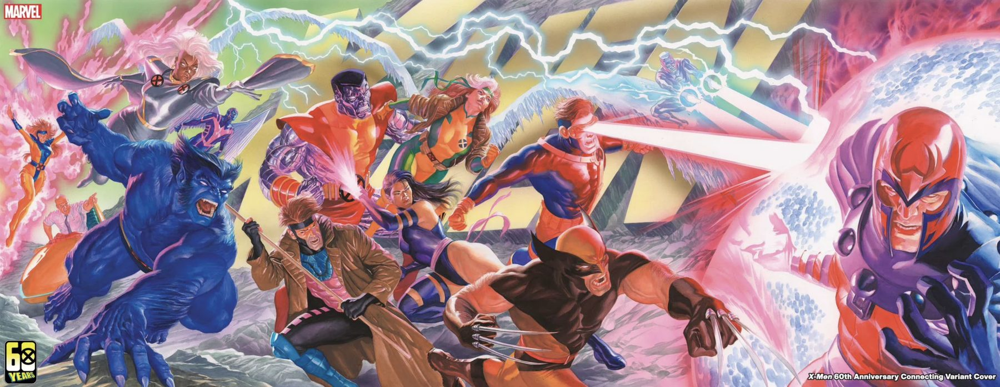

Progress isn't saving in this browser. Private/incognito windows block local storage. Use the Back up button below to keep your progress in a file.

X-Men
Omnibus Shelf · 2008–2010 · Never printed
Four omnibuses Marvel never printed. The Messiah trilogy has no collected edition, so this shelf is a mock-up of the four hardcovers the read would take.
The Shelf That Doesn't Exist
None of these four books were ever printed. Marvel has never collected the Messiah trilogy
in omnibus, so this is a mock-up — the same researched 174-issue chronological read this page
has always carried, cut into the four hardcovers it would take. Nothing was renumbered: every issue
keeps its Marvel link, its arc placement note and the progress you already logged against it.